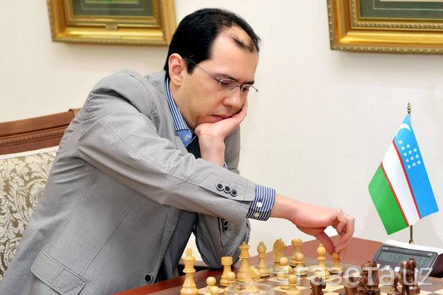

Рустам Қосимжонов – шахмат дунёсидаги юлдузлардан бири бўлиб, унинг ютуқлари мусулмон…

Рустам Қосимжонов – шахмат дунёсидаги юлдузлардан бири бўлиб, унинг ютуқлари мусулмон оламида янги тарих яратди. У 2004 йили Ливияда ўтказилган ФИДЕ жаҳон чемпионатида ғалаба қозониб, дунёнинг энг кучли шахматчиларидан бири сифатида танилди. Унинг бу ғалабаси айниқса эътиборга молик, чунки Қосимжонов унинг олдида турган Гарри Каспаров, Анатолий Карпов ва Владимир Крамник каби буюк шахматчиларнинг изидан бориб, ўз номини шу жойда абадий қолдирди.
Рустамнинг ноёб маҳоратлари уни турли йирик турнирларда чемпион қилишга ёрдам берди. 2015 йили у машҳур гроссмейстер Фабиано Каруананинг шахмат бўйича шахсий мураббийи бўлди ва кейинчалик Вишванатан Ананд билан бирга ишлади, бу эса унинг шахматдаги билим ва тажрибасини янада оширди. Унинг ҳар бир ҳаракати нафақат индивидуал ғалабалар, балки жамоа ичида ҳам катта таъсир кўрсатган.
Бундан ташқари, Қосимжонов шахмат олимпиадаларида Ўзбекистон терма жамоаси билан бир неча марта юқори натижаларга эришган. Унинг шахматга бўлган садоқати ва муваффақиятлари кўплаб ёш шахматчилар учун илҳом манбаи бўлиб қолмоқда.
Рустам Қосимжонов тарихда биринчи бўлиб шахмат бўйича мусулмон оламининг намоёндасига айланди. Бу нафақат унинг шахсий ютуғи, балки бутун мусулмон олами учун ғурурдир. Унинг муваффақияти шуни кўрсатадики, шахмат сингари интеллектуал спорт турларида ҳам мусулмонлар орасида йирик ғалабаларга эришиш мумкин. Қосимжоновнинг жасорати ва сабр-тоқати барчамиз учун катта илҳомдир. Унинг йўлидан борган ҳар бир киши ўзини янгича қирралардан очиши ва ҳеч қачон орзуларидан воз кечмаслиги лозим.
Рустам Қосимжонов тарихда биринчи бўлиб шахмат бўйича катта маррага эришган мусулмон боласи бўлди!